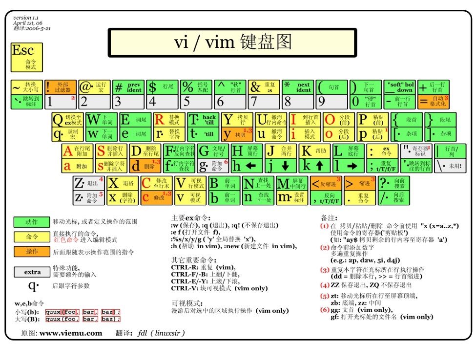
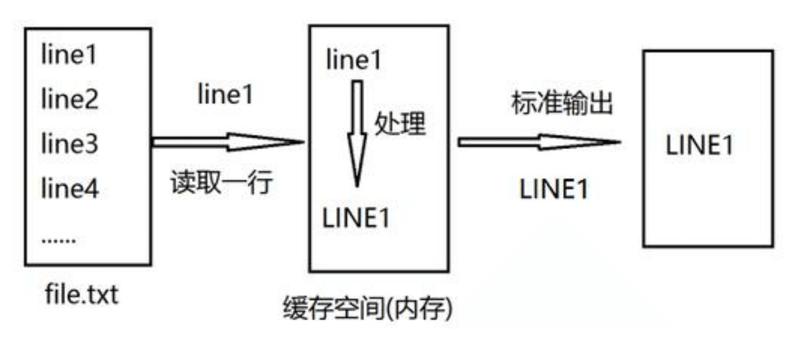

文本编辑工具之神VIM
vi和vim简介 在Linux中我们经常编辑修改文本文件，即由ASCII, Unicode 或其它编码的纯文字的文件。之前介绍过nano，实际工作中我们会使用更为专业，功能强大的工具
文本编辑种类：
全屏编辑器：nano（字符工具），gedit(图形化工具)，vi，vim
行编辑器：sed
VI
Visual editor，文本编辑器，是 Linux 必备工具之一，功能强大，学习曲线较陡峭，学习难度大
VIM
VIsual editor iMproved ，和 vi 使用方法一致，但功能更为强大，不是必备软件
VIM 官网 https://www.vim.org
其他相关编辑器：gvim 一个Vim编辑器的图形版本
VIM 小抄
参考链接： https://www.w3cschool.cn/vim/
如何退出VIM
使用 vim 初步 vim 命令格式 常用选项
1 2 3 4 5 6 7 +N +/PATTERN -b file -d file1 file2… -m file -e file -y file
说明：
如果该文件存在，文件被打开并显示内容
如果该文件不存在，当编辑后第一次存盘时创建它
范例：
1 2 3 4 5 6 7 [root@rocky8 ~] [root@rocky8 ~] [root@rocky8 ~] [root@rocky8 ~] [root@rocky8 ~]
三种主要模式和转换 vim 是 一个模式编辑器，击键行为是依赖于 vim的 的“模式”
三种模式：
命令或普通(Normal)模式：默认模式，可以实现移动光标，剪切/粘贴文本
插入(Insert)或编辑模式：用于修改文本
扩展命令(extended command )或命令(末)行模式：保存，退出等
三种模式之间的切换：
vim 是 一个模式编辑器，击键行为是依赖于 vim的“模式”，就是说，在不同模式下，相同的按键，是不同的意思；
插入模式和扩展命令模式之间不能直接切换，要走命令模式中转；
打开vim 默认就是命令模式；
1 2 3 4 5 6 7 8 9 10 11 12 13 14 15 16 17 18 19 20 21 22 23 24 25 26 27 28 29 30 31 32 33 34
范例: 插入颜色字符
vim 中实现
1 2 3 4 5 1 切换至插入模式 2 按ctrl+v+[ 三个键,显示^[ 3 后续输入颜色信息,如:^[[32mhello^[[0m 4 切换至扩展命令模式,保存退出 5 cat 文件可以看到下面显示
1 2 ^[[1;31mhello vim^[[0m ^[[1;32mGreen ^[[0m
扩展命令模式 按：进入Ex模式 ，创建一个命令提示符: 处于底部的屏幕左侧
扩展命令模式基本命令 1 2 3 4 5 6 7 8 9 10 w wq x X q q！ r filename w filename !command r!command
范例：
1 2 3 4 5 6 7 8 9 10 :w :q! :r /etc/fstab :w test :!hostname :r!uname -a :X Enter encryption key: ****** Enter same key again: ******
地址定界 格式：
地址定界格式 1 2 3 4 5 6 7 8 9 10 11 12 13 14 N M,N M,+N M,-N M;+N M;-N . $ .,$-1 % /pattern/ /pat1/,/pat2/ N,/pat/ /pat/,$
地址定界后跟一个编辑命令 1 2 3 4 5 6 7 p d y w file r file t行号 m行号
范例：
1 2 3 4 5 6 7 8 9 10 [root@rocky8 ~] :2d :2,4d :2;+3y :3;+4w test :5r /etc/issue :t2 :2,+3t10 :.d :$y
查找并替换 格式
1 2 :s/要查找的内容/替换为的内容/修饰符 :%s 表示全文查找替换
说明：
1 2 要查找的内容：可使用基本正则表达式模式 替换为的内容：不能使用模式，但可以使用\1, \2, ...等后向引用符号；还可以使用“&”引用前面查找时查找到的整个内容
修饰符：
查找替换中的分隔符/可替换为其它字符，如：#，@
范例：
1 2 3 4 5 6 :s/root/ROOT/ :s/root/ROOT/g :%s/root/ROOT/g :%s/root/test/ig :%s/
定制vim的工作特性 扩展命令模式的配置只是对当前vim进程有效，可将配置存放在文件中持久保存；
写配置文件必须保证能识别，有些短格式在 配置文件；
行号 1 2 :set number|set nu :set nonumber|set nonu
忽略字符的大小写 1 2 :set ignorecase|set ic :set noignorecase|set noic
自动缩进 1 2 :set autoindent|set ai :set noautoindent|set noai
复制保留格式 1 2 :set paste :set nopaste
显示Tab ^I和换行符 和$显示 高亮搜索 1 2 :set hlsearch :set nohlsearch|nohl
语法高亮 文件格式 1 2 :set fileformat=dos|set ff=doc :set fileformat=unix|set ff=unix
Tab 用空格代替 1 2 :set expandtab|set et :set noexpandtab|set noet
Tab用指定空格的个数代替 设置缩进宽度 1 2 3 4 >> << :set shiftwidth=4
设置光标所在行的标识线 1 2 :set cursorline|set cul :set nocursorline|set nocul
加密 1 2 :set key=password :set key=
了解更多 set 帮助
1 2 :help option-list :set |:set all
命令模式 命令模式，又称为Normal模式，功能强大，但是在此模式下输入的命令不会在屏幕上显示，只能靠记忆记住到底输入了什么，所以此处我们 要记住大量快捷键；
退出VIM 光标跳转 字符间跳转：
单词间跳转
当前页跳转：
行首行尾跳转：
行间移动：
句间移动：
段落间移动：
命令模式翻屏操作
1 2 3 4 Ctrl+f Ctrl+b Ctrl+d Ctrl+u
字符编辑 替换命令(replace) 删除命令(delete) 1 2 3 4 5 6 7 8 9 10 11 12 13 14 15 d d$|D d^ d0 dw de db dG dgg dd Ndd
复制命令(yank) 1 2 3 4 5 6 7 8 9 10 y y$ y0 y^ yy|Y Nyy yw ye yb
粘贴命令(paste) 改变命令(change) 命令 c 删除后切换成插入模式
1 2 3 4 5 6 7 8 c$|C c^ c0 cc Ncc cw ce cb
命令模式操作文本总结
查找 1 2 3 4 /PATTERN ?PATTERN n N
撤消更改 高级用法 1 <start position><command ><end position>
常见Command：y 复制、d 删除、gU 变大写、gu 变小写
范例：
1 2 3 4 5 6 7 8 9 0y$ di"" yi() vi[] dtx ytx 10iabc ESC
可视化模式 在末行有“– VISUAL –” 指示，表示在可视化模式
允许选择的文本块
v 面向字符，– VISUAL –
V 面向整行，– VISUAL LINE –
ctrl-v 面向块，– VISUAL BLOCK –
可视化键可用于与移动键结合使用
w ) } 箭头等
突出显示的文字可被删除，复制，变更，过滤，搜索，替换等
范例：在文件指定行的行首插入#
1 2 3 4 5 6 1、先将光标移动到指定的第一行的行首 2、输入ctrl+v 进入可视化模式 3、向下移动光标，选中希望操作的每一行的第一个字符 4、输入大写字母 I 切换至插入模式 5、输入 6、按 ESC 键
范例：在指定的块位置插入相同的内容
1 2 3 4 5 1、光标定位到要操作的地方 2、CTRL+v 进入“可视块”模式，选取这一列操作多少行 3、SHIFT+i(I) 4、输入要插入的内容 5、按 ESC 键
多窗口模式 多文件分割 1 2 3 4 5 vim FILE1 FILE2... :next :prev
1 2 3 4 5 6 7 vim -o|-O FILE1 FILE2 ... -o -O :wqall Ctrl+w, Arrow
单文件窗口分割 1 2 3 4 5 6 Ctrl+w,s Ctrl+w,v ctrl+w,q ctrl+w,o :wqall Ctrl+w, Arrow
帮助 1 2 3 4 5 6 :help :help topic :q :help index
vim 帮助程序
vim 总结图 
文本常见处理工具 文件内容查看命令 查看文本文件内容 cat cat 可以查看文本内容
格式：
1 2 3 4 5 6 7 8 cat [OPTION]... [FILE]...-E|--show-ends -A|--show-all -n|--number -b|--number-nonblank -s|--squeeze-blank
范例：
1 2 3 4 5 6 7 8 9 10 11 12 13 14 15 16 17 18 19 20 21 22 23 24 25 26 [root@rocky86 ~] a b$ c $ d^Ib^Ic$ [root@rocky86 ~] a b c d b c [root@rocky86 ~] a b c [root@rocky86 ~] 00000000 61 0d 0a 62 0d 0a 63 0d 0a |a..b..c..| 00000009 [root@rocky86 ~] a^M$ b^M$ c^M$ [root@rocky86 ~] /data/fb.txt: ASCII text, with CRLF line terminators
nl 显示行号，相当于cat -b
1 2 3 4 5 6 7 8 9 10 11 12 13 14 15 16 17 18 19 [root@rocky86 ~] a b c d e f g h [root@rocky86 ~] 1 a 2 b 3 c 4 d 5 e 6 f 7 g 8 h
tac 逆向显示文本内容
1 2 3 4 5 6 7 8 9 10 11 12 13 14 15 16 17 18 19 20 21 22 23 24 25 26 27 28 29 30 31 32 33 [root@rocky86 ~] 1 2 3 4 5 [root@rocky86 ~] 5 4 3 2 1 [root@rocky86 ~] a bb ccc 按ctrl+d ccc bb a [root@rocky86 ~] 10 9 8 7 6 5 4 3 2 1
rev 将同一行的内容逆向显示
1 2 3 4 5 6 7 8 9 10 11 12 13 14 15 16 17 18 19 20 21 [root@rocky86 ~] 1 2 3 4 5 a b c [root@rocky86 ~] a b c 1 2 3 4 5 [root@rocky86 ~] 5 4 3 2 1 c b a [root@rocky86 ~] abcdef fedcba [root@rocky86 ~] 01 9 8 7 6 5 4 3 2 1
查看非文本文件内容 范例：hexdump
1 2 3 4 5 6 7 [root@rocky8 ~] 00000000 eb 63 90 10 8e d0 bc 00 b0 b8 00 00 8e d8 8e c0 |.c..............| [root@rocky8 ~] 00000000 61 62 63 64 65 66 67 68 69 6a 6b 6c 6d 6e 6f 70 |abcdefghijklmnop| 00000010 71 72 73 74 75 76 77 78 79 7a 0a |qrstuvwxyz.| 0000001b
分页查看文件内容 more 可以实现分页查看文件，可以配合管道实现输出信息的分页
格式
1 2 3 4 5 more [OPTIONS...] FILE... -d -s
命令选项
1 2 3 4 5 6 空格键 回车键 !cmd h :f =
示例：
1 2 3 [root@rocky86 ~] [root@rocky86 ~]
less less 也可以实现分页查看文件或STDIN输出，less 命令是man命令使用的分页器
格式：
1 2 3 4 5 6 7 less [OPTIONS...] FILE... -e -N -s -S
命令选项
范例：
1 2 3 [root@rocky86 ~] [root@rocky86 ~]
显示文本前面或后面的行内容 head 可以显示文件或标准输入的前面行
格式：
1 2 3 4 5 6 7 8 9 head [OPTION]... [FILE]...-c|--bytes=N -n|--lines=N -N -q|--quiet|--silent -v|--verbose -z|--zero-terminated
范例：
1 2 3 4 5 6 7 8 9 10 11 12 13 14 15 16 17 18 19 20 21 22 23 24 25 26 27 28 29 30 31 32 33 34 35 36 37 38 39 40 41 42 43 44 45 46 47 48 49 50 [root@rocky8 ~] root:x:0:0:root:/root:/bin/bash bin:x:1:1:bin:/bin:/sbin/nologin daemon:x:2:2:daemon:/sbin:/sbin/nologin [root@rocky8 ~] root:x:0:0:root:/root:/bin/bash bin:x:1:1:bin:/bin:/sbin/nologin daemon:x:2:2:daemon:/sbin:/sbin/nologin [root@rocky8 ~] a我 [root@rocky8 ~] b6TeJQlZBJ [root@rocky8 ~] Changing password for user jerry. passwd: all authentication tokens updated successfully. [root@centos8 ~] 1 2 3 4 5 6 7 8 9 10 [root@centos8 ~] 1 2 3 [root@centos8 ~] 1 2 3 4 5 6 7 [root@centos8 ~] 1 2 3
tail tail 和head 相反，查看文件或标准输入的倒数行
格式：
1 2 3 4 5 6 7 8 9 10 11 12 tail [OPTION]... [FILE]...-c|--bytes=N -n|--lines=N -N -f|--follow=descriptor -F|--follow=name --retry -q|--quiet|--silent -z|--zero-terminated tailf
范例：
1 2 3 4 5 6 7 8 9 10 11 12 13 14 15 16 17 18 19 20 21 22 23 24 25 26 [root@centos8 ~] 1 2 3 4 5 6 7 8 9 10 [root@centos8 ~] 8 9 10 [root@centos8 ~] 3 4 5 6 7 8 9 10
范例：
1 2 3 4 5 6 7 8 9 10 11 12 13 14 15 16 17 18 19 20 [root@rocky8 ~] Sep 5 14:04:24 rocky8 systemd[1]: openvpn-server@server.service: Main process exited, code=exited, status=1/FAILURE Sep 5 14:04:24 rocky8 systemd[1]: openvpn-server@server.service: Failed with result 'exit-code' . Sep 5 14:04:24 rocky8 systemd[1]: Failed to start OpenVPN service for server. [root@rocky8 ~] Sep 5 14:04:55 rocky8 openvpn[1798]: Options error: --ca fails with 'ca.crt' : No such file or directory (errno=2) Sep 5 14:04:55 rocky8 openvpn[1798]: Options error: --cert fails with 'server_A7r9AfMWXrKibJBp.crt' : No such file or directory (errno=2) [root@rocky8 ~] [root@rocky8 ~] [root@rocky8 ~] inet 192.168.1.11 netmask 255.255.255.0 broadcast 192.168.1.255 [root@rocky8 ~] 192.168.1.11
head 和 tail 总结
命令
含义
示例
head -n k file
取 file 前 k 行内容
head -n 3 /etc/passwd
head -k file
取 file 前 k 行内容
head -3 /etc/passwd
head -n +k file
取 file 前 k 行内容
head -n +3 /etc/passwd
head -n -k file
取 file 第一行到倒数第 k 行内容
head -n -3 /etc/passwd
tail -n k file
从后往前数，取 file 第一行到第 k 行内容
tail -n 3 /etc/passwd
tail -k file
从后往前数，取 file 第一行到第 k 行内容
tail -3 /etc/passwd
tail -n -k file
从后往前数，取 file 第一行到第 k 行内容
tail -n -3 /etc/passwd
tail -n +k file
从后往前数，取 file 第一行到倒数第 k 行内容
tail -n +3 /etc/passwd
范例: 显示第6行
1 2 3 4 5 [root@rocky8 ~] 6 [root@rocky8 ~] 6
按列抽取文本 cut cut 命令可以提取文本文件或 STDIN 数据的指定列
格式
1 2 3 4 5 6 7 8 9 10 cut OPTION... [FILE]...-b|--bytes=LIST -c|--characters=LIST -d|--delimiter=DELIM -f|--fields=LIST -s|--only-delimited --output-delimiter=STRING -z|--zero-terminated
范例：
1 2 3 4 5 6 7 8 9 10 11 12 13 14 15 16 17 18 19 20 21 22 23 24 25 26 27 28 29 30 31 32 33 34 35 36 37 38 39 40 41 42 43 44 45 46 47 48 [root@rocky8 ~] [root@rocky8 ~] 192.168.1.11 [root@rocky8 ~] 192.168.1.11 [root@rocky8 ~] 0 0 1 0 3 1 21 0 [root@rocky8 ~] 0 0 1 0 3 1 21 0 [root@rocky8 ~] 0 0 1 0 3 1 21 0 [root@rocky8 ~] root---0---/bin/bash bin---1---/sbin/nologin daemon---2---/sbin/nologin [root@rocky8 dict] 55
范例: 取分区利用率
1 2 3 4 5 6 7 8 9 10 11 12 13 14 15 16 17 18 19 20 21 22 23 24 25 26 27 28 29 30 31 32 33 34 35 36 37 38 39 40 41 42 43 [root@rocky8 dict] [root@rocky8 ~] Use 0 0 1 0 3 1 21 0 [root@rocky8 ~] 0 0 2 0 3 1 21 0 [root@rocky8 ~] 0 0 2 0 3 1 21 0 [root@rocky8 ~] 0 0 2 0 3 1 21 0
合并多个文件 paste paste 合并多个文件同行号的列到一行
格式
1 2 3 4 5 6 paste [OPTION]... [FILE]...-d|--delimiters=LIST -s|--serial -z|--zero-terminated
范例：
1 2 3 4 5 6 7 8 9 10 11 12 13 14 15 16 17 18 19 20 21 22 23 24 25 26 27 28 29 30 31 32 33 34 35 36 37 38 39 40 41 42 43 44 45 46 47 48 49 50 51 52 53 54 55 56 57 58 59 60 61 62 63 64 65 66 67 68 69 70 71 72 73 74 75 76 77 78 79 80 81 82 83 84 85 86 87 88 89 90 91 92 93 94 95 96 97 98 99 100 101 102 103 104 105 106 107 108 109 110 111 112 113 114 115 [root@rocky8 ~] [root@rocky8 ~] a b c d e f g h [root@rocky8 ~] [root@rocky8 ~] 1 2 3 4 5 [root@rocky8 ~] a b c d e f g h 1 2 3 4 5 [root@rocky8 ~] a 1 b 2 c 3 d 4 e 5 f g h [root@rocky8 ~] a:1 b:2 c:3 d:4 e:5 f: g: h: [root@rocky8 ~] a b c d e f g h [root@rocky8 ~] 1 2 3 4 5 [root@rocky8 ~] a b c d e f g h 1 2 3 4 5 [root@rocky8 ~] ceo coo cto [root@rocky8 ~] mage zhang wang xu [root@rocky8 ~] ceo mage coo zhang cto wang xu [root@rocky8 ~] ceo coo cto mage zhang wang xu [root@rocky8 ~] 1 2 3 4 5 6 7 8 9 10 [root@rocky8 ~] a b c d e f g h i j [root@rocky8 ~] 1:2:3:4:5:6:7:8:9:10 a:b:c:d:e:f:g:h:i:j [root@rocky8 ~] 55
范例: 批量修改密码
1 2 3 4 5 6 7 8 9 10 11 12 13 14 15 [root@rocky8 ~] > jose > jerry > EOF [root@rocky8 ~] > 123456 > 000000 > EOF [root@rocky8 ~] jose:123456 jerry:000000 [root@rocky8 ~]
分析文本的工具 文本数据统计：wc
整理文本：sort
比较文件：diff和patch
收集文本统计数据 wc wc 命令可用于统计文件的行总数、单词总数、字节总数和字符总数，可以对文件或STDIN中的数据统计
格式：
1 2 3 4 5 6 7 8 wc [OPTION]... [FILE]...-l|--lines -w|--words -c|--bytes -m|--chars -L|--max-line-length
范例:
1 2 3 4 5 6 7 8 9 10 11 12 13 14 15 16 17 18 19 20 21 22 23 24 25 26 27 28 29 30 wc story.txt 39 237 1901 story.txt 行数 单词数 字节数 [root@rocky8 ~] ceo coo cto [root@rocky8 ~] 3 3 12 title.txt [root@rocky8 ~] 3 title.txt [root@rocky8 ~] 3 [root@rocky8 ~] devtmpfs 897456 0 897456 0% /dev tmpfs 916616 0 916616 0% /dev/shm tmpfs 916616 20332 896284 3% /run tmpfs 916616 0 916616 0% /sys/fs/cgroup /dev/mapper/rl-root 136248320 3148716 133099604 3% / /dev/mapper/rl-home 68124160 508224 67615936 1% /home /dev/sda1 1038336 216736 821600 21% /boot tmpfs 183320 0 183320 0% /run/user/0
文本排序 sort 把整理过的文本显示在STDOUT，不改变原始文件
格式：
1 2 3 4 5 6 7 8 9 10 11 12 13 14 sort [OPTION]... [FILE]...-b|--ignore-leading-blanks -f|--ignore-case -h|--human-numeric-sort -M|--month-sort -n|--numeric-sort -R|--random-sort -r|-reverse -t|--field-separator=SEP -k|--key=KEYDEF -u|--unique -z|--zero-terminated
范例:
1 2 3 4 5 6 7 8 [root@rocky8 ~] nobody:65534 varnish:1029 nginx:1028 [root@rocky8 ~] 202
范例：统计分区利用率
1 2 3 4 5 6 7 8 9 10 11 12 13 14 15 16 17 18 19 20 21 22 23 24 25 26 27 28 29 30 31 32 33 34 35 36 37 38 39 40 [root@rocky8 ~] Filesystem 1K-blocks Used Available Use% Mounted on devtmpfs 897456 0 897456 0% /dev tmpfs 916616 0 916616 0% /dev/shm tmpfs 916616 20332 896284 3% /run tmpfs 916616 0 916616 0% /sys/fs/cgroup /dev/mapper/rl-root 136248320 3149228 133099092 3% / /dev/mapper/rl-home 68124160 508224 67615936 1% /home /dev/sda1 1038336 216736 821600 21% /boot tmpfs 183320 0 183320 0% /run/user/0 [root@rocky8 ~] 21 [root@rocky8 ~] 3 3 21 1 0 0 0 0 [root@rocky8 ~] 0 0 0 0 1 3 3 21 [root@rocky8 ~] 21 [root@rocky8 ~] 21
面试题：有两个文件，a.txt与b.txt ，合并两个文件，并输出时确保每个数字也唯一
1 2 3 4 5 6 7 8 9 10 11 12 13 14 15 16 17 18 19 20 21 22 23 24 25 26 27 28 29 30 31 32 33 34 35 36 37 38 39 [root@rocky8 ~] 1111 222 33 4444 5 666 77 8 9999 100000 [root@rocky8 ~] 8 1111 33 222 100000 77 159 666 137 189 [root@rocky8 ~] [root@rocky8 ~] 5 8 33 77 137 159 189 222 666 1111 4444 9999 100000
去重 uniq uniq命令从输入中删除前后相接的重复的行，常和 sort 配合使用
格式：
1 2 3 4 5 6 7 8 uniq [OPTION]... [INPUT [OUTPUT]]-c|--count -d|--repeated -D -u|--unique -z|--zero-terminated
范例：
1 2 3 4 5 6 7 8 9 10 11 12 13 14 [root@rocky8 ~] 1 5 2 8 2 33 2 77 1 137 1 159 1 189 2 222 2 666 2 1111 1 4444 1 9999 2 100000
范例：统计日志访问量最多的前三名的请求
1 2 [root@rocky86 ~] 17 10.0.0.1
范例：取两个文件的相同和不同的行
1 2 3 4 5 6 7 8 9 10 11 12 13 14 15 16 17 18 [root@rocky86 ~] 100000 1111 222 33 666 77 8 [root@rocky86 ~] 137 159 189 4444 5 9999
比较文件 diff diff 命令比较两个文件之间的区别
格式：
1 2 3 4 diff [OPTION]... FILES -u
范例：
1 2 3 4 5 6 7 8 9 10 11 12 13 14 15 16 17 18 19 20 21 22 23 24 25 26 27 28 29 30 31 32 33 34 35 36 37 38 39 40 41 42 [root@rocky8 ~] 1 2 3 [root@rocky8 ~] 3 7 2 5 [root@rocky8 ~] --- f1.txt 2024-09-08 16:54:47.648321426 +0800 +++ f2.txt 2024-09-08 16:55:03.037322301 +0800 @@ -1,3 +1,4 @@ -1 -2 3 +7 +2 +5 [root@rocky8 ~] [root@rocky8 ~] [root@rocky8 ~] patching file f1.txt [root@rocky8 ~] 3 7 2 5 [root@rocky8 ~] 1 2 3
patch patch 复制在其它文件中进行的改变（要谨慎使用）
格式：
1 2 3 4 patch [OPTION]... [ORIGFILE [PATCHFILE]] -b|--backup
范例：
1 2 3 4 5 [root@rocky8 ~] patching file f1.txt
vimdiff 相当于 vim -d
1 2 3 4 5 6 7 [root@rocky8 ~] /usr/bin/vimdiff [root@rocky8 ~] lrwxrwxrwx. 1 root root 3 Aug 2 2022 /usr/bin/vimdiff -> vim [root@rocky8 ~]
cmp 范例：查看二进制文件的不同
1 2 3 4 5 6 7 8 9 10 11 12 13 14 15 16 17 18 19 20 21 22 23 24 [root@rocky8 ~] -rwxr-xr-x. 1 root root 143400 Oct 21 2021 /usr/bin/dir -rwxr-xr-x. 1 root root 143400 Oct 21 2021 /usr/bin/ls [root@rocky8 ~] 267929 -rwxr-xr-x. 1 root root 143400 Oct 21 2021 /usr/bin/dir 267950 -rwxr-xr-x. 1 root root 143400 Oct 21 2021 /usr/bin/ls [root@rocky8 ~] Binary files /usr/bin/dir and /usr/bin/ls differ [root@rocky8 ~] /bin/dir /bin/ls differ: byte 793, line 1 [root@rocky8 ~] 000002df 00 03 00 00 00 00 00 00 00 04 00 00 00 10 00 00 |................| 000002ef 00 01 00 00 00 47 4e 55 00 00 00 00 00 03 |.....GNU......| 000002fd [root@rocky8 ~] 000002df 00 03 00 00 00 00 00 00 00 04 00 00 00 10 00 00 |................| 000002ef 00 01 00 00 00 47 4e 55 00 00 00 00 00 03 |.....GNU......| 000002fd
练习
找出ifconfig “网卡名” 命令结果中本机的IPv4地址
查出分区空间使用率的最大百分比值
查出用户UID最大值的用户名、UID及shell类型
查出/tmp的权限，以数字方式显示
统计当前连接本机的每个远程主机IP的连接数，并按从大到小排序
1 2 3 4 5 6 7 8 9 10 11 12 13 14 15 16 17 18 1. [root@rocky8 ~] 192.168.1.11 2. [root@rocky8 ~] 21 3. [root@rocky8 ~] nobody:65534:65534:/sbin/nologin 4. [root@rocky8 ~] 1777 5. [root@rocky8 ~]
正则表达式 REGEXP： Regular Expressions，由一类特殊字符及文本字符所编写的模式；其中有些字符（元字符）不表示字符字面意义，而表示控制或 通配的功能，类似于增强版的通配符功能；但与通配符不同，通配符功能是用来处理文件名，而正则表达式是处理文本内容中字符；
正则表达式被很多程序和开发语言所广泛支持：vim, less,grep,sed,awk, nginx,mysql 等;
正则表达式分两类：
基本正则表达式：BRE Basic Regular Expressions；
扩展正则表达式：ERE Extended Regular Expressions；
正则表达式引擎：
采用不同算法，检查处理正则表达式的软件模块，如：PCRE（Perl Compatible Regular Expressions）
正则表达式的元字符分类：
字符匹配、匹配次数、位置锚定、分组
帮助：man 7 regex
基本正则表达式元字符 字符匹配 1 2 3 4 5 6 7 8 9 10 11 12 13 14 15 16 17 18 19 20 21 22 . [] [^] [:alnum:] [:alpha:] [:lower:] [:upper:] [:blank:] [:space:] [:cntrl:] [:digit:] [:xdigit:] [:graph:] [:print :] [:punct:] -------------------------------------- \s \S \w \W
范例：匹配任意单个字符
1 2 3 4 5 6 7 8 9 10 11 12 13 14 15 16 17 [root@rocky8 ~] operator:x:11:0:operator:/root:/sbin/nologin sshd:x:74:74:Privilege-separated SSH:/var/empty/sshd:/sbin/nologin [root@rocky8 ~] root:x:0:0:root:/root:/bin/bash operator:x:11:0:operator:/root:/sbin/nologin ftp:x:14:50:FTP User:/var/ftp:/sbin/nologin [root@rocky8 ~] a你好b [root@rocky8 ~] aaa你好b [root@rocky8 ~] aaa你-b
范例：范围匹配
1 2 3 4 5 6 7 8 9 10 11 12 13 14 15 16 17 18 19 20 21 22 23 24 25 26 27 28 29 30 31 32 33 34 35 36 37 38 39 40 41 42 43 44 45 46 47 48 49 50 51 52 53 54 55 56 57 58 59 60 61 62 63 64 65 [root@rocky8 ~] rc0.d rc1.d rc2.d rc3.d rc4.d rc5.d rc6.d rc.d rc.local [root@rocky8 ~] rc0.d rc1.d rc2.d rc3.d rc4.d rc5.d rc6.d rc.d rc.local [root@rocky8 ~] rc0.d rc1.d rc2.d rc3.d rc4.d rc5.d rc6.d [root@rocky8 ~] ma [root@rocky8 ~] ma [root@rocky8 ~] ab1c2d3e4444fABCg$%^ [root@rocky8 ~] ab1c2d3e4444fABCg$%^ [root@rocky8 ~] ab1c2d3e4444fABCg$%^ [root@rocky8 ~] ab1c2d3e4444fABCg$%^ [root@rocky8 ~] ab1c2d3e4444fABCg$%^ [root@rocky8 ~] ab1c2d3e4444fABCg$%^ [root@rocky8 ~] ab1c2d3e4444fABCg$%^ [root@rocky8 ~] 1 2 3 [root@rocky8 ~] 1 2 3
匹配次数 用在要指定次数的字符后面，用于指定前面的字符要出现的次数
1 2 3 4 5 6 7 8 * .* \? \+ \{n\} \{m,n\} \{,n\} \{n,\}
范例：
1 2 3 4 5 6 7 8 9 10 11 [root@rocky8 ~] rt [root@rocky8 ~] rot [root@rocky8 ~] root [root@rocky8 ~] rooooooot
范例：任意长度任意字符
范例：0次或1次
1 2 3 4 5 [root@rocky8 ~] /etc/ [root@rocky8 ~] /etc
范例：1次或多次
1 2 3 4 5 6 7 8 9 10 [root@rocky8 ~] google [root@rocky8 ~] gogle [root@rocky8 ~] [root@rocky8 ~] gooogle
范例：自定义次数
1 2 3 4 5 6 7 8 9 10 11 12 13 14 15 [root@rocky8 ~] google [root@rocky8 ~] google [root@rocky8 ~] google [root@rocky8 ~] google
范例: 匹配正负数
1 2 3 4 5 6 7 8 9 10 11 12 13 14 15 16 17 18 19 20 21 22 23 [root@rocky8 ~] grep: invalid option -- '\' Usage: grep [OPTION]... PATTERN [FILE]... Try 'grep --help' for more information. [root@rocky8 ~] -1 -2 123 -123 234 [root@rocky8 ~] grep: invalid option -- '?' Usage: grep [OPTION]... PATTERN [FILE]... Try 'grep --help' for more information. [root@rocky8 ~] -1 -2 123 -123 234 [root@rocky8 ~] -1 -2 123 -123 234 [root@rocky8 ~] -1 -2 123 -123 234
范例: 取IP地址
1 2 3 4 5 6 7 8 9 10 11 12 13 14 15 16 17 18 [root@rocky8 ~] ens160: flags=4163<UP,BROADCAST,RUNNING,MULTICAST> mtu 1500 inet 192.168.1.11 netmask 255.255.255.0 broadcast 192.168.1.255 inet6 fe80::20c:29ff:fe51:f282 prefixlen 64 scopeid 0x20<link > ether 00:0c:29:51:f2:82 txqueuelen 1000 (Ethernet) RX packets 2128 bytes 179640 (175.4 KiB) RX errors 0 dropped 0 overruns 0 frame 0 TX packets 1506 bytes 144441 (141.0 KiB) TX errors 0 dropped 0 overruns 0 carrier 0 collisions 0 [root@rocky8 ~] 192.168.1.11 [root@rocky8 ~] 192.168.1.11
位置锚定 位置锚定可以用于定位出现的位置
1 2 3 4 5 6 7 8 9 10 ^ $ ^PATTERN$ ^$ ^[[:space:]]*$ \< 或 \b \> 或 \b \<PATTERN\>
范例：
1 2 3 4 5 6 7 8 9 10 11 12 13 14 15 16 17 18 19 20 21 22 23 24 25 26 27 28 29 30 31 32 [root@rocky8 ~] [root@rocky8 ~] [root@rocky8 ~] [root@rocky8 ~] [root@rocky8 ~] [root@rocky8 ~] [root@rocky8 ~] [root@rocky8 ~] [root@rocky8 ~] mage [root@rocky8 ~] mage- [root@rocky8 ~]
范例:
1 2 3 4 5 [root@rocky8 ~] /dev/mapper/rl-root / xfs defaults 0 0 UUID=a8e3c539-a7e7-4828-9a4d-08a9ec290d07 /boot xfs defaults 0 0 /dev/mapper/rl-home /home xfs defaults 0 0 /dev/mapper/rl-swap none swap defaults 0 0
分组其它 分组 分组：() 将多个字符捆绑在一起，当作一个整体处理，如：(root)+
后向引用：分组括号中的模式匹配到的内容会被正则表达式引擎记录于内部的变量中，这些变量的命名方式为: \1, \2, \3, …
\1 表示从左侧起第一个左括号以及与之匹配右括号之间的模式所匹配到的字符
注意: \0 表示正则表达式匹配的所有字符
示例：
1 2 3 4 5 6 7 8 9 10 11 12 13 14 15 16 17 18 19 20 21 22 23 24 25 26 27 28 29 30 [root@rocky8 ~] abccc [root@rocky8 ~] abcabcabc [root@rocky8 ~] abcabcabc [root@rocky8 ~] abcabcabc [root@rocky8 ~] abcdefabc [root@rocky8 ~] abc-def-abcabcabc [root@rocky8 ~] abc-def-abcabcabc-def-abc-defdef [root@rocky8 ~] 192.168.1.11
注意： 后向引用引用前面的分组括号中的模式所匹配字符，而非模式本身
或者 或者：|
示例：
1 2 3 4 5 6 7 8 9 10 11 12 13 14 15 16 17 18 19 20 21 22 23 24 25 26 27 28 29 30 31 32 33 34 35 36 37 38 39 40 41 42 43 44 45 46 47 48 49 50 51 52 53 54 55 56 57 58 59 60 61 62 a\|b C\|cat \(C\|c\)at [root@rocky8 ~] a [root@rocky8 ~] b [root@rocky8 ~] ab [root@rocky8 ~] abc [root@rocky8 ~] cab [root@rocky8 ~] acb [root@rocky8 ~] 12a [root@rocky8 ~] b [root@rocky8 ~] 12ab [root@rocky8 ~] 12ba [root@rocky8 ~] 12a [root@rocky8 ~] 12b [root@rocky8 ~] 12ab [root@rocky8 ~] 12ba [root@rocky8 ~] 12a [root@rocky8 ~] 12b [root@rocky8 ~] 12ab [root@rocky8 ~] 12ba [root@rocky8 ~] 12a [root@rocky8 ~] 12b [root@rocky8 ~] 12ab [root@rocky8 ~] 12ba
范例：排除空行和#开头的行
1 2 3 4 5 6 7 [root@rocky8 ~] [root@rocky8 ~] [root@rocky8 ~] [root@rocky8 ~]
正则表达式练习
显示/proc/meminfo文件中以大小s开头的行(要求：使用两种方法)
显示/etc/passwd文件中不以/bin/bash结尾的行
显示用户rpc默认的shell程序
找出/etc/passwd中的两位或三位数
显示CentOS7的/etc/grub2.cfg文件中，至少以一个空白字符开头的且后面有非空白字符的行
找出“netstat -tan”命令结果中以LISTEN后跟任意多个空白字符结尾的行
显示CentOS7上所有UID小于1000以内的用户名和UID
添加用户bash、testbash、basher、sh、nologin(其shell为/sbin/nologin),找出/etc/passwd用户名 和shell同名的行
利用df和grep，取出磁盘各分区利用率，并从大到小排序
1 2 3 4 5 6 7 8 9 10 11 12 13 14 15 16 17 18 19 20 21 22 23 24 25 26 27 28 29 1. [root@rocky8 ~] [root@rocky8 ~] 2. [root@rocky8 ~] 3. [root@rocky8 ~] 4. [root@rocky8 ~] 5. [root@rocky8 ~] 6. [root@rocky8 ~] 7. [root@rocky8 ~] 8. [root@rocky8 ~] 9. [root@rocky8 ~]
扩展正则表达式元字符 字符匹配 1 2 3 4 5 6 7 8 9 10 11 12 13 14 15 . [wang] [^wang] [:alnum:] [:alpha:] [:lower:] [:upper:] [:blank:] [:space:] [:cntrl:] [:digit:] [:xdigit:] [:graph:] [:print :] [:punct:]
匹配次数 位置锚定 分组其它 1 2 3 4 5 () 分组 | a|b C|cat (C|c)at
范例:
1 2 [root@rocky8 ~] 192.168.1.11
扩展正则表达式练习
显示三个用户root、mage、wang的UID和默认shell
找出/etc/rc.d/init.d/functions文件中行首为某单词(包括下划线)后面跟一个小括号的行
使用egrep取出/etc/rc.d/init.d/functions中其基名
使用egrep取出上面路径的目录名
统计last命令中以root登录的每个主机IP地址登录次数
利用扩展正则表达式分别表示0-9、10-99、100-199、200-249、250-255
显示ifconfig命令结果中所有IPv4地址
将此字符串：welcome to magedu linux 中的每个字符去重并排序，重复次数多的排到前面
1 2 3 4 5 6 7 8 9 10 11 12 13 14 15 16 17 18 19 20 21 22 23 24 25 26 27 28 29 30 31 32 33 34 35 36 1. [root@rocky8 ~] 2. [root@rocky8 ~] 3. [root@rocky8 ~] 4. [root@rocky8 ~] 5. [root@rocky8 ~] 6. [0-9] 1[0-9][0-9] 2[0-4][0-9] 25[0-5] 7. [root@rocky8 ~] 8. [root@rocky8 ~] 4 e 2 u 2 o 2 m 2 l 1 x 1 w 1 t 1 n 1 i 1 g 1 d 1 c
文本处理三剑客 grep 命令主要对文本的（正则表达式）行基于模式进行过滤
sed：stream editor，文本编辑工具
awk：Linux上的实现gawk，文本报告生成器
文本处理三剑客之 grep grep: Global search REgular expression and Print out the line
作用：文本搜索工具，根据用户指定的 “模式” 对目标文本逐行进行匹配检查；打印匹配到的行
模式：由正则表达式字符及文本字符所编写的过滤条件
帮助
1 https://man7.org/linux/man-pages/man1/grep.1.html
格式：
1 2 3 4 5 6 7 8 9 10 11 12 13 14 15 16 17 18 19 20 21 22 23 24 25 26 27 28 29 30 31 32 33 34 35 36 grep [OPTIONS] PATTERN [FILE...] -E|--extended-regexp -F|--fixed-strings -G|--basic-regexp -P|--perl-regexp -e|--regexp=PATTERN -f|--file=FILE -i|--ignore-case -w|--word-regexp -x|--line-regexp -s|--no-messages -v|--invert-match -B|--before-context=N -A|--after-context=N -C|--context=N -N --color=auto -m|--max-count=N -b|--byte-offset -n|--line-number -H|--with-filename -h|--no-filename -o|--only-matching -q|--quiet|--silent --binary-files=TYPE -a|--text -I -d|--directories=ACTION -D|--devices=ACTION -r|--recursive -R|--dereference-recursive -L|--files-without-match -l|--files-with-matches -c|--count
范例：标准输入
1 2 3 4 5 6 7 [root@rocky86 ~] 123hello456 123hello456 [root@rocky86 ~] 123hello456 123hello456
范例：处理文件
1 2 3 [root@rocky86 ~] root:x:0:0:root:/root:/bin/bash operator:x:11:0:operator:/root:/sbin/nologin
范例：管道
1 2 3 [root@rocky86 ~] root:x:0:0:root:/root:/bin/bash operator:x:11:0:operator:/root:/sbin/nologin
范例：标准输入重定向
1 2 3 [root@rocky86 ~] root:x:0:0:root:/root:/bin/bash operator:x:11:0:operator:/root:/sbin/nologin
范例：取前三行
1 2 3 4 [root@rocky86 ~] root:x:0:0:root:/root:/bin/bash bin:x:1:1:bin:/bin:/sbin/nologin daemon:x:2:2:daemon:/sbin:/sbin/nologin
范例：取反，取不匹配的行
1 2 3 4 5 6 7 8 9 10 11 [root@rocky86 ~] root:x:0:0:root:/root:/bin/bash sync :x:5:0:sync :/sbin:/bin/sync shutdown:x:6:0:shutdown:/sbin:/sbin/shutdown halt:x:7:0:halt:/sbin:/sbin/halt jose:x:1010:1010::/home/jose:/bin/bash jerry:x:1011:1011::/home/jerry:/bin/bash mage:x:1000:1000::/home/mage:/bin/bash [root@rocky86 ~]
范例：不区分大小写
1 2 3 [root@rocky86 ~] root:x:0:0:root:/root:/bin/bash operator:x:11:0:operator:/root:/sbin/nologin
范例：显示行号
1 2 3 [root@rocky86 ~] 1:root:x:0:0:root:/root:/bin/bash 10:operator:x:11:0:operator:/root:/sbin/nologin
范例：显示匹配的行数
范例：仅显示匹配到的内容
1 2 3 4 5 [root@rocky86 ~] root root root root
范例：静默模式
1 2 3 4 5 6 7 8 9 [root@rocky86 ~] [root@rocky86 ~] 0 [root@rocky86 ~] [root@rocky86 ~] 1
范例：显示匹配到的行及后两行
1 2 3 4 5 6 7 8 [root@rocky86 ~] root:x:0:0:root:/root:/bin/bash bin:x:1:1:bin:/bin:/sbin/nologin daemon:x:2:2:daemon:/sbin:/sbin/nologin -- operator:x:11:0:operator:/root:/sbin/nologin games:x:12:100:games:/usr/games:/sbin/nologin ftp:x:14:50:FTP User:/var/ftp:/sbin/nologin
范例：显示匹配到的行及前两行
1 2 3 4 5 6 7 8 9 10 [root@rocky86 ~] root:x:0:0:root:/root:/bin/bash bin:x:1:1:bin:/bin:/sbin/nologin daemon:x:2:2:daemon:/sbin:/sbin/nologin -- halt:x:7:0:halt:/sbin:/sbin/halt mail:x:8:12:mail:/var/spool/mail:/sbin/nologin operator:x:11:0:operator:/root:/sbin/nologin games:x:12:100:games:/usr/games:/sbin/nologin ftp:x:14:50:FTP User:/var/ftp:/sbin/nologin
范例：显示匹配root的行或匹配 bash 的行
1 2 3 4 5 6 [root@rocky86 ~] root:x:0:0:root:/root:/bin/bash operator:x:11:0:operator:/root:/sbin/nologin jose:x:1010:1010::/home/jose:/bin/bash jerry:x:1011:1011::/home/jerry:/bin/bash mage:x:1000:1000::/home/mage:/bin/bash
范例：显示匹配root的行且匹配 bash 的行
1 2 [root@rocky86 ~] root:x:0:0:root:/root:/bin/bash
范例：从文件读取匹配规则
1 2 3 4 5 6 7 8 9 10 [root@rocky86 ~] root bash [root@rocky86 ~] root:x:0:0:root:/root:/bin/bash operator:x:11:0:operator:/root:/sbin/nologin jose:x:1010:1010::/home/jose:/bin/bash jerry:x:1011:1011::/home/jerry:/bin/bash mage:x:1000:1000::/home/mage:/bin/bash
范例：递归匹配
1 2 3 4 5 [root@rocky86 ~] [root@rocky86 ~]
范例：只显示有匹配到的文件的文件名，不显示具体内容
1 2 3 [root@rocky86 ~] /etc/passwd /etc/sudoers
范例：显示内容来自于哪个文件
1 2 3 4 5 6 7 [root@rocky86 ~] /etc/passwd:root:x:0:0:root:/root:/bin/bash /etc/passwd:operator:x:11:0:operator:/root:/sbin/nologin /etc/sudoers: /etc/sudoers: /etc/sudoers:root ALL=(ALL) ALL /etc/sudoers:
范例：命令行展开
1 2 3 4 5 6 7 8 9 10 [root@rocky86 ~] root:x:0:0:root:/root:/bin/bash operator:x:11:0:operator:/root:/sbin/nologin [root@rocky86 ~] root:x:0:0:root:/root:/bin/bash operator:x:11:0:operator:/root:/sbin/nologin [root@rocky86 ~] Linux123
范例：变量展开
1 2 3 [root@rocky86 ~] root:x:0:0:root:/root:/bin/bash operator:x:11:0:operator:/root:/sbin/nologin
范例：取CPU核数
范例: 分区利用率最大的值
1 2 3 4 5 [root@rocky8 ~] [root@rocky8 ~] [root@rocky8 ~]
范例: 哪个IP和当前主机连接数最多的前三位
范例: 连接状态的统计
1 2 3 4 5 6 7 [root@rocky8 ~] 1 ESTAB 3 LISTEN [root@rocky8 ~] 1 ESTAB 3 LISTEN
范例:
1 2 3 4 5 6 [root@rocky8 ~] [root@rocky8 ~] [root@rocky8 ~] [root@rocky8 ~] [root@rocky8 ~] [root@rocky8 ~]
范例:
1 2 3 4 5 6 [root@rocky8 ~] root root root root r/ft
范例:
1 2 3 4 5 6 7 8 9 10 11 12 13 14 15 16 17 18 19 20 [root@rocky8 ~] inet 192.168.1.11 netmask 255.255.255.0 broadcast 192.168.1.25 inet 127.0.0.1 netmask 255.0.0.0 [root@rocky8 ~] inet 192.168.1.11 netmask 255.255.255.0 broadcast 192.168.1.25 inet 127.0.0.1 netmask 255.0.0.0 [root@rocky8 ~] 192.168.1.11 [root@rocky8 ~] > ([0-9]{1,3}\.){3}[0-9]{1,3} > EOF [root@rocky8 ~] 192.168.1.11 255.255.255.0 192.168.1.255 127.0.0.1 255.0.0.0
范例:
1 2 3 4 5 6 7 8 9 10 11 12 13 14 15 16 17 18 19 20 21 22 23 [root@rocky8 ~] root:x:0:0:root:/root:/bin/bash operator:x:11:0:operator:/root:/sbin/nologin jose:x:1000:1000::/home/jose:/bin/bash u1:x:1024:1024::/home/u1:/bin/bash u2:x:1025:1025::/home/u2:/bin/bash u3:x:1026:1026::/home/u3:/bin/bash jerry:x:1001:1001:tom to jerry:/home/tom:/bin/bash bash:x:1030:1032::/home/bash:/sbin/nologin basher:x:1031:1033::/home/basher:/sbin/nologin testbash:x:1034:1036::/home/testbash:/sbin/nologin [root@rocky8 ~] root:x:0:0:root:/root:/bin/bash operator:x:11:0:operator:/root:/sbin/nologin jose:x:1000:1000::/home/jose:/bin/bash u1:x:1024:1024::/home/u1:/bin/bash u2:x:1025:1025::/home/u2:/bin/bash u3:x:1026:1026::/home/u3:/bin/bash jerry:x:1001:1001:tom to jerry:/home/tom:/bin/bash bash:x:1030:1032::/home/bash:/sbin/nologin basher:x:1031:1033::/home/basher:/sbin/nologin testbash:x:1034:1036::/home/testbash:/sbin/nologin
范例:
1 2 3 4 5 6 7 [root@rocky8 ~] root:x:0:0:root:/root:/bin/bash operator:x:11:0:operator:/root:/sbin/nologin [root@rocky8 ~] root:x:0:0:root:/root:/bin/bash operator:x:11:0:operator:/root:/sbin/nologin
范例：
1 2 3 4 5 6 7 8 9 10 11 12 13 14 15 16 17 [root@rocky8 ~] sync :x:5:0:sync :/sbin:/bin/sync shutdown:x:6:0:shutdown:/sbin:/sbin/shutdown halt:x:7:0:halt:/sbin:/sbin/halt nologin:x:1033:1035::/home/nologin:/sbin/nologin [root@rocky8 ~] sync :x:5:0:sync :/sbin:/bin/sync shutdown:x:6:0:shutdown:/sbin:/sbin/shutdown halt:x:7:0:halt:/sbin:/sbin/halt nologin:x:1033:1035::/home/nologin:/sbin/nologin [root@rocky8 ~] sync :x:5:0:sync :/sbin:/bin/sync shutdown:x:6:0:shutdown:/sbin:/sbin/shutdown halt:x:7:0:halt:/sbin:/sbin/halt nologin:x:1033:1035::/home/nologin:/sbin/nologin
范例: 过滤掉文件的注释(包括#号的行)和空行
1 2 3 4 5 6 [root@rocky8 ~] /dev/mapper/rl-root / xfs defaults 0 0 UUID=a8e3c539-a7e7-4828-9a4d-08a9ec290d07 /boot xfs defaults 0 0 /dev/mapper/rl-home /home xfs defaults 0 0 /dev/mapper/rl-swap none swap defaults 0 0
范例：面试题，算出所有人的年龄总和
1 2 3 4 5 6 7 8 9 10 11 12 13 [root@rocky8 ~] xiaoming=20 xiaohong=18 xiaoqiang=22 [root@rocky8 ~] 60 [root@rocky8 ~] 60 [root@rocky8 ~] 60
文本处理三剑客之 sed sed 工作原理 sed 即 Stream EDitor，和 vi 不同，sed是行编辑器

Sed是从文件或管道中读取一行，处理一行，输出一行；再读取一行，再处理一行，再输出一行，直到最后一行。
每当处理一行时，把当前处理的行存储在临时缓冲区 模式空间（Pattern Space） 中，接着用sed命令处理缓冲区中的内容，处理完成后， 把缓冲区的内容送往屏幕。接着处理下一行，这样不断重复，直到文件末尾。
一次处理一行的设计模式使得sed性能很高，sed在读取大文件时不会出现卡顿的现象。
如果使用vi命令打开几十M上百M的文件，明显会出现有卡顿的现象，这是因为vi命令打开文件是一次性将文件加载到内存，然后再打开。 Sed就避免了这种情况，一行一行的处理，打开速度非常快，执行速度也很快。
相关文档
http://sed.sourceforge.net/
https://man7.org/linux/man-pages/man1/sed.1.html
http://www.gnu.org/software/sed/manual/sed.html
sed 基本用法 格式：
1 2 3 4 5 6 7 8 9 10 11 12 13 14 15 16 17 18 sed [OPTION]... {script-only-if-no-other-script} [input-file]... -n|--quiet|--silent -e script|--expression=script -f script-file|--file=script-file -i[SUFFIX]|--in-place[=SUFFIX] -c|--copy -l N|--line-length=N --posix -E|-r|--regexp-extended -s|--separate -ir -ri -i -r -ni
script 格式：
地址格式：
1 2 3 4 5 6 7 8 9 10 11 12 13 14 15 16 17 N $ /pattern/ M,N M,+N /pattern1/,/pattern2/ M,/pattern/ /pattern/,N 1~2 2~2
命令：
1 2 3 4 5 6 7 8 9 10 11 p Ip d a [\]text i [\]text c [\]text w file r file = ! q
查找替代
1 2 3 4 5 6 7 8 9 10 11 12 13 14 15 s/pattern/replace/修饰符 g p w file I|i \1 \2 \N &
范例:
1 2 3 4 5 6 7 8 9 10 11 12 13 14 15 16 17 18 19 20 21 22 23 24 25 26 27 28 29 30 31 32 33 34 35 36 37 38 39 40 41 42 43 44 45 46 47 48 49 50 51 52 53 54 55 56 57 58 59 60 61 62 63 64 65 66 67 68 69 70 [root@rocky8 ~] 123 123 [root@rocky8 ~] 123 123 [root@rocky8 ~] \S Kernel \r on an \m [root@rocky8 ~] \S \S Kernel \r on an \m Kernel \r on an \m [root@rocky8 ~] [root@rocky8 ~] \S Kernel \r on an \m [root@rocky8 ~] root:x:0:0:root:/root:/bin/bash [root@rocky8 ~] testbash:x:1034:1036::/home/testbash:/sbin/nologin [root@rocky8 ~] root:x:0:0:root:/root:/bin/bash operator:x:11:0:operator:/root:/sbin/nologin [root@rocky8 ~] root:x:0:0:root:/root:/bin/bash [root@rocky8 ~] root:x:0:0:root:/root:/bin/bash jose:x:1000:1000::/home/jose:/bin/bash jerry:x:1001:1001:tom to jerry:/home/tom:/bin/bash [root@rocky8 ~] 2 3 4 5 6 7 8 9 10 11 [root@rocky8 ~] halt:x:7:0:halt:/sbin:/sbin/halt mail:x:8:12:mail:/var/spool/mail:/sbin/nologin operator:x:11:0:operator:/root:/sbin/nologin
范例：添加内容
1 2 3 4 5 6 7 8 9 10 11 12 13 14 15 16 17 18 19 20 21 22 23 24 25 26 27 28 29 30 31 32 33 34 35 36 37 38 39 40 41 42 43 44 45 46 47 48 49 50 51 52 53 54 55 56 57 58 59 60 61 62 63 64 65 66 67 68 [root@rocky8 ~] aaa bbb ccc bbb EOF [root@rocky8 ~] aaa bbb --- ccc bbb --- [root@rocky8 ~] aaa --- bbb ccc bbb [root@rocky8 ~] aaa --- bbb --- ccc --- bbb [root@rocky8 ~] --- bbb ccc bbb [root@rocky8 ~] --- +++ bbb ccc bbb [root@rocky8 ~] --- ccc bbb [root@rocky8 ~] aaa bbb ********** ccc bbb [root@rocky8 ~] aaa bbb ********** ccc bbb
范例：
1 2 3 4 5 6 7 8 9 [root@rocky8 ~] inet 192.168.1.11 netmask 255.255.255.0 broadcast 192.168.1.255 [root@rocky8 ~] inet 192.168.1.11 netmask 255.255.255.0 broadcast 192.168.1.255 [root@rocky8 ~] inet 192.168.1.11 netmask 255.255.255.0 broadcast 192.168.1.255
范例：命令展开
1 2 3 4 5 6 7 8 9 10 11 [root@rocky8 ~] root:x:0:0:root:/root:/bin/bash operator:x:11:0:operator:/root:/sbin/nologin [root@rocky8 ~] root:x:0:0:root:/root:/bin/bash [root@rocky8 ~] nologin:x:1033:1035::/home/nologin:/sbin/nologin
范例：变量展开
1 2 3 4 5 6 [root@rocky8 ~] root:x:0:0:root:/root:/bin/bash operator:x:11:0:operator:/root:/sbin/nologin [root@rocky8 ~] root:x:0:0:root:/root:/bin/bash
范例：变量和命令
1 2 3 4 5 6 7 [root@rocky8 ~] root:x:0:0:root:/root:/bin/bash [root@rocky8 ~] root:x:0:0:root:/root:/bin/bash bin:x:1:1:bin:/bin:/sbin/nologin daemon:x:2:2:daemon:/sbin:/sbin/nologin
范例：
1 2 [root@rocky8 ~] /dev/sda1 1038336 216736 821600 21% /boot
1 2 3 4 5 6 7 8 9 10 11 12 13 14 15 16 17 18 19 20 21 22 23 24 25 26 27 28 29 30 31 32 33 34 35 36 37 38 39 40 41 42 43 44 45 46 47 48 49 50 51 52 53 54 55 56 57 58 59 60 61 62 63 64 65 66 67 68 69 70 71 72 73 74 75 76 [root@rocky8 ~] 2 3 4 [root@rocky8 ~] 2 3 4 5 6 [root@rocky8 ~] 8 9 10 [root@rocky8 ~] 1 3 5 7 9 [root@rocky8 ~] 2 4 6 8 10 [root@rocky8 ~] 2 4 6 8 10 [root@rocky8 ~] 1 3 5 7 9 [root@rocky8 ~] 1 3 5 6 7 8 9 10 [root@rocky8 ~] 1 3 5 6 7 8 9 10 [root@rocky8 ~] /dev/mapper/rl-root / xfs defaults 0 0 UUID=a8e3c539-a7e7-4828-9a4d-08a9ec290d07 /boot xfs defaults 0 0 /dev/mapper/rl-home /home xfs defaults 0 0 /dev/mapper/rl-swap none swap defaults 0 0
范例：
1 2 3 4 5 6 [root@rocky8 ~] [root@rocky8 ~] [root@rocky8 ~]
范例：修改文件
1 2 3 4 5 6 7 8 9 10 11 12 13 14 15 16 17 18 19 20 21 22 23 24 25 26 27 28 29 30 31 32 33 34 35 36 37 38 39 [root@rocky8 ~] [root@rocky8 ~] [root@rocky8 ~] -rw-r--r--. 1 root root 9 Sep 14 13:04 10.txt -rw-r--r--. 1 root root 21 Sep 14 13:04 10.txt.bak [root@rocky8 ~] 1 8 9 10 [root@rocky8 ~] 1 2 3 4 5 6 7 8 9 10 [root@rocky8 ~] [root@rocky8 ~] [root@rocky8 ~] [root@rocky8 ~] -rw-r--r--. 1 root root 9 Sep 14 13:06 10.txt [root@rocky8 ~] 1 8 9 10
范例：删除注释行和空行
1 2 3 [root@rocky8 ~] [root@rocky8 ~]
范例: 搜索替换和&
1 2 3 4 5 6 7 8 9 10 11 12 [root@rocky8 ~] ROOT:x:0:0:ROOT:/ROOT:/bin/bash operator:x:11:0:operator:/ROOT:/sbin/nologin [root@rocky8 ~] rooter:x:0:0:rooter:/rooter:/bin/bash operator:x:11:0:operator:/rooter:/sbin/nologin [root@rocky8 ~] rooter:x:0:0:rooter:/rooter:/bin/bash operator:x:11:0:operator:/rooter:/sbin/nologin ftp:x:14:50:FTP User:/var/fterp:/sbin/nologin
范例: 除指定文件外其余删除
1 2 3 4 5 6 7 8 9 10 11 12 13 14 15 16 17 18 19 20 21 22 23 24 25 26 27 28 29 30 31 32 33 34 35 36 37 38 39 [root@rocky8 ~] f-1.txt f-2.txt f-3.txt f-4.txt f-5.txt f-6.txt f-7.txt f-8.txt [root@rocky8 ~] f-2.txt f-4.txt f-6.txt f-8.txt [root@rocky8 ~] [root@rocky8 ~] f-1.txt f-3.txt f-5.txt f-7.txt [root@rocky8 ~] f-2.txt f-4.txt f-6.txt f-8.txt [root@rocky8 ~] [root@rocky8 ~] f-1.txt f-3.txt f-5.txt f-7.txt [root@rocky8 ~] rm f-2.txtrm f-4.txtrm f-6.txtrm f-8.txt[root@rocky8 ~] [root@rocky8 ~] f-1.txt f-3.txt f-5.txt f-7.txt
范例: 获取分区利用率
1 2 3 4 5 6 7 [root@rocky8 ~] 21 [root@rocky8 ~] 21 3 1
范例：取IP 地址
1 2 3 4 5 6 7 8 9 10 11 12 13 14 15 16 17 [root@rocky8 ~] 192.168.1.11 [root@rocky8 ~] 192.168.1.11 [root@rocky8 ~] 192.168.1.11 [root@rocky8 ~] 192.168.1.11 [root@rocky8 ~] 192.168.1.11 [root@rocky8 ~] 192.168.1.11
范例：取基名和目录名
1 2 3 4 5 6 7 8 9 10 11 12 13 14 [root@rocky8 ~] network-scripts [root@rocky8 ~] network-scripts [root@rocky8 ~] /etc/sysconfig [root@rocky8 ~] /etc/sysconfig/
范例: 取文件的前缀和后缀
1 2 3 4 5 [root@rocky8 ~] a txt [root@rocky8 ~] a.tar.gz txt
范例：将非#开头的行加#
1 2 3 4 5 6 7 8 9 10 11 12 13 14 15 16 17 [root@rocky8 ~] [root@rocky8 ~] [root@rocky8 ~]
范例：将#开头的行删除#
1 2 3 [root@rocky8 ~] [root@rocky8 ~]
范例：取分区利用率
1 2 3 4 5 6 7 8 9 10 11 12 13 14 [root@rocky8 ~] /dev/mapper/rl-root 3 /dev/mapper/rl-home 1 /dev/sda1 21 [root@rocky8 ~] 3 1 21 [root@rocky8 ~] 3 1 21
范例：修改网卡名称
1 2 3 4 5 6 7 8 9 10 [root@rocky8 ~] [root@rocky8 ~] [root@rocky8 default] grub grub.bak useradd useradd- [root@rocky8 ~] [root@rocky8 ~]
范例：修改selinux配置
1 2 3 4 5 6 7 8 9 [root@rocky8 ~] [root@rocky8 ~] [root@rocky8 ~] [root@rocky8 ~] [root@rocky8 ~]
范例: 显示前4行
1 2 3 4 5 6 [root@rocky8 ~] [root@rocky8 ~] 1 2 3 4
sed 高级用法 sed 中除了模式空间，还另外还支持保持空间（Hold Space），利用此空间，可以将模式空间中的数据， 临时保存至保持空间，从而后续接着处理，实现更为强大的功能。
常见的高级命令
1 2 3 4 5 6 7 8 9 10 11 P h H g G x n N d D
范例：
1 2 3 4 5 6 7 8 9 10 11 12 13 14 sed -n 'n;p' FILE seq 10 | sed 'N;s/\n//' sed '1!G;h;$!d' FILE seq 10 | sed -n '/3/{g;1!p;};h' seq 10 | sed -nr '/3/{n;p}' sed 'N;D' FILE seq 10 |sed '3h;9G;9!d' sed '$!N;$!D' FILE sed '$!d' FILE sed 'G' FILE sed 'g' FILE sed '/^$/d;G' FILE sed 'n;d' FILE sed -n '1!G;h;$p' FILE
范例: 打印偶数行
1 2 3 4 5 6 7 8 9 10 11 12 13 14 15 16 17 18 19 20 21 22 23 24 25 26 27 [root@rocky8 ~] 2 4 6 8 10 [root@rocky8 ~] 2 4 6 8 10 [root@rocky8 ~] 2 4 6 8 10 [root@rocky8 ~] 2 4 6 8 10
练习：
删除centos7系统/etc/grub2.cfg文件中所有以空白开头的行行首的空白字符
删除/etc/fstab文件中所有以#开头，后面至少跟一个空白字符的行的行首的#和空白字符
在centos6系统/root/install.log每一行行首增加#号
在/etc/fstab文件中不以#开头的行的行首增加#号
处理/etc/fstab路径,使用sed命令取出其目录名和基名
利用sed 取出ifconfig命令中本机的IPv4地址
统计centos安装光盘中Package目录下的所有rpm文件的以.分隔倒数第二个字段的重复次数
统计/etc/init.d/functions文件中每个单词的出现次数，并排序（用grep和sed两种方法分别实现）
将文本文件的n和n+1行合并为一行，n为奇数行
1 2 3 4 5 6 7 8 9 10 11 12 13 14 15 16 17 18 19 20 21 22 23 24 25 1. sed -i 's/^[[:space:]]*//;T' /etc/grub2.cfg 2. sed -i "s/^#[[:space:]]+//" /etc/fstab 3. sed -i "s/^/#/" /root/install.log 4. sed -i "s/^#*/#/" /etc/fstab 5. echo "/etc/fstab" | sed -nE 's#(^/.*/)([^/]+)/?#\2#p' fstab echo "/etc/fstab" | sed -nE 's#(^/.*/)([^/]+)/?#\1#p' /etc/ 6. ifconfig ens160 | sed -nE 's/.*inet ([0-9.]+).*/\1/p' 192.168.1.11 7.
文本处理三剑客之 awk
awk 工作原理和基本用法说明 awk：Aho, Weinberger, Kernighan，报告生成器，格式化文本输出，GNU/Linux发布的AWK目前由自由软件基金会（FSF）进行开发和维护，通常也称它为 GNU AWK
AWK有多种版本：
AWK：原先来源于 AT & T 实验室的的AWK
NAWK：New awk，AT & T 实验室的AWK的升级版
GAWK：即GNU AWK。所有的GNU/Linux发布版都自带GAWK，它与AWK和NAWK完全兼容
目前主流发行版LINUX中使用的都是GAWK
1 2 [root@rocky8 ~] lrwxrwxrwx. 1 root root 4 May 19 2021 /usr/bin/awk -> gawk
GNU AWK 用户手册文档
1 2 https://www.gnu.org/software/gawk/manual/gawk.html https://man7.org/linux/man-pages/man1/awk.1p.html
gawk：模式扫描和处理语言，可以实现下面功能
文本处理
输出格式化的文本报表
执行算数运算
执行字符串操作
格式：
1 2 3 4 5 6 7 awk [options] 'program' var=value file… awk [options] -f programfile var=value file… -f progfile|--file progfile -F fs|--field-separator fs -v var=val|--asign var=val
program用法
1 2 3 4 5 6 7 8 9 10 program 通常放在单引号中，由三部份组成，分别是BEGIN{}[pattern]{COMMAND}END{},这三部份可以没有或都有 awk '' /etc/issue awk 'BEGIN{print "begin"}' /etc/issue awk '{print $0}' /etc/issue awk 'END{print "end"}' /etc/issue awk 'BEGIN{print "begin"}{print $0}END{print "end"}' /etc/issue
Program格式：
1 2 3 4 pattern{action statements;..} pattern action statements
awk 工作过程
执行BEGIN{action;… }语句块中的语句
从文件或标准输入(stdin)读取一行，然后执行pattern{ action;… }语句块，它逐行扫描文件，从 第一行到最后一行重复这个过程，直到 文件全部被读取完毕。
当读至输入流末尾时，执行END{action;…}语句块
BEGIN语句块在awk开始从输入流中读取行之前被执行，这是一个可选的语句块，比如变量初始化、打 印输出表格的表头等语句通常可以写 在BEGIN语句块中
END语句块在awk从输入流中读取完所有的行之后即被执行，比如打印所有行的分析结果这类信息汇总 都是在END语句块中完成，它也是一 个可选语句块
pattern语句块中的通用命令是最重要的部分，也是可选的。如果没有提供pattern语句块，则默认执行{ print }，即打印每一个读取到的行，awk读取的每一行都会执行该语句块
分割符、域和记录
文件的每一行称为记录 record
记录可以由指定的分隔符分隔成多个字段（列 column，域 field），由$1，$2…$N 来标识每一个字段，$0 表示一整行
awk 变量 awk中的变量分为内置和自定义变量两种
变量的作用在于可以一次定义多次调用
内置变量 常用内置变量
变量名
含义
FILENAME
当前文件名
FS
字段分隔符，默认为空白字符，功能相当于-F
RS
换行符，用于分割指定文件的行，默认是换行符
OFS
输出字段分隔符，默认为空白字符
ORS
输出换行符，输出时用指定符号代替换行符
OFMT
数字的输出格式，默认值是%.6g
NF
一条记录的字段数量
NR
已经读出的记录数，就是行号，从1开始
FNR
各文件分别记录行号
ARGC
命令行参数的个数
ARGV
数组，保存的是命令行所给定的各参数，每一个参数：ARGV[0], ….., ARGV[n]
范例：FILENAME
1 2 3 4 5 6 7 8 9 10 [root@rocky8 ~] [root@rocky8 ~] test test test /etc/issue
范例：FS
1 2 3 4 5 6 7 8 9 10 11 12 13 14 15 16 17 18 19 20 21 22 23 24 25 26 27 28 29 30 31 32 33 34 35 [root@rocky8 ~] root root bin bin daemon daemon [root@rocky8 ~] : root:root bin:bin daemon:daemon [root@rocky8 ~] : root:root bin:bin daemon:daemon [root@rocky8 ~] : root:root bin:bin daemon:daemon [root@rocky8 ~] ; [root@rocky8 ~] :
范例：RS
1 2 3 4 5 6 7 8 9 10 [root@rocky8 ~] a b c;1 2 3;x y z$ [root@rocky8 ~] a b c;1 2 3;x y z [root@rocky8 ~] a b c 1 2 3 x y z
范例：OFS
1 2 3 4 5 6 7 8 9 10 11 [root@rocky8 ~] root 0 bin 1 daemon 2 adm 3 [root@rocky8 ~] root---0 bin---1 daemon---2 adm---3
范例：ORS
1 2 3 4 5 6 7 8 9 10 11 12 13 [root@rocky8 ~] 123$ 456$ 789$ [root@rocky8 ~] 123 456 789 [root@rocky8 ~] 123---456---789---[root@rocky8 ~]
范例：OFMT
1 2 3 4 5 6 [root@rocky8 ~] 3.14159 3 3.1 3.1415926 3.14159260
范例：NF
1 2 3 4 5 6 7 8 9 10 11 12 13 14 [root@rocky8 ~] 7 7 7 [root@rocky8 ~] /bin/bash /sbin/nologin /sbin/nologin [root@rocky8 ~] /root /bin /sbin
范例：NR
1 2 3 4 [root@rocky8 ~] 1 \S 2 Kernel \r on an \m 3
范例：FNR
1 2 3 4 5 [root@rocky8 ~] 1 1 \S 2 2 Kernel \r on an \m 3 3 4 1 Rocky Linux release 8.5 (Green Obsidian)
范例：ARGC
1 2 3 4 5 6 [root@rocky8 ~] 1 [root@rocky8 ~] 2 [root@rocky8 ~] 3
范例：ARGV
1 2 [root@rocky8 ~] 3 --- awk --- /etc/issue --- /etc/os-release
自定义变量 AWK中的自定义变量命名要区分大小写
用 -v 选项定义自定义变量
1 2 3 4 5 6 [root@rocky8 ~] abc [root@rocky8 ~] abc 123
在program中定义
1 2 3 4 5 6 7 8 9 10 [root@rocky8 ~] abc [root@rocky8 ~] abc def def def
动作 print 格式：
说明：
逗号分隔符
输出item可以字符串，也可是数值；当前记录的字段、变量或awk的表达式
如省略item，相当于print $0
固定字符符需要用“ ” 引起来，而变量和数字不需要
范例：
1 2 3 4 5 6 7 8 9 10 11 12 13 14 15 16 17 18 19 20 21 22 23 24 25 26 27 28 29 30 31 32 [root@rocky8 ~] hello world [root@rocky8 ~] hello world hello world hello world [root@rocky8 ~] 1 2 3 [root@rocky8 ~] 6 [root@rocky8 ~] \S Kernel \r on an \m [root@rocky8 ~] 123 root 0 123 bin 1 123 daemon 2 123 adm 3 [root@rocky8 ~] 123 root 0 123 bin 1 123 daemon 2 123 adm 3
动作 printf printf 可以实现格式化输出
格式：
1 printf "FORMAT" ,item1,item2,...
说明：
必须指定FORMAT
不会自动换行，需要显式给出换行控制符 \n
FORMAT中需要分别为后面每个item指定格式符
格式符：与item一一对应
1 2 3 4 5 6 7 8 %s %d|%i %f %e|%E %c %g|%G %u %%
修饰符
范例：
1 2 3 4 5 6 7 8 9 10 11 12 13 14 15 16 17 18 19 20 21 22 23 24 25 26 27 28 29 30 31 32 33 34 [root@rocky8 ~] rootbindaemonadmlpsyncshutdownhaltmailoperator [root@rocky8 ~] root bin daemon adm [root@rocky8 ~] root bin daemon [root@rocky8 ~] root 0 bin 1 daemon 2 adm 3 [root@rocky8 ~] Username: rootUID: 0 Username: binUID: 1 Username: daemonUID: 2 Username: admUID: 3 [root@rocky8 ~] Username: root UID: 0 Username: bin UID: 1 Username: daemon UID: 2 Username: adm UID: 3
范例：
1 2 3 4 5 6 7 8 9 10 11 12 [root@rocky8 ~] --------------------------- |username |uid | --------------------------- |root | 0| --------------------------- |bin | 1| --------------------------- |daemon | 2| --------------------------- |adm | 3| ---------------------------
操作符 赋值操作
1 =, +=, -=, *=, /=, %=, ^=, ++, --
比较操作
算术运算符
1 2 3 x+y, x-y, x*y, x/y, x^y, x%y -x +x
范例：
1 2 3 4 5 6 7 8 [root@rocky8 ~] 0 1 [root@rocky8 ~] 1 1 [root@rocky8 ~] 1 2 [root@rocky8 ~] 1 1
范例：
1 2 3 4 5 6 7 8 9 10 11 12 13 14 15 16 17 18 19 20 [root@rocky8 ~] 2 3 [root@rocky8 ~] root:x:0:0:root:/root:/bin/bash [root@rocky8 ~] 1 [root@rocky8 ~] [root@rocky8 ~] [root@rocky8 ~] [root@rocky8 ~] root:x:0:0:root:/root:/bin/bash
范例：
1 2 3 4 5 6 7 8 9 [root@rocky8 ~] bin:x:1:1:bin:/bin:/sbin/nologin [root@rocky8 ~] nobody:x:65534:65534:Kernel Overflow User:/:/sbin/nologin jose:x:1000:1000::/home/jose:/bin/bash jeck:x:1002:1002::/home/jeck:/bin/sh jerry:x:1001:1001:tom to jerry:/home/tom:/bin/bash
范例：取奇，偶数行
1 2 3 4 5 6 7 8 9 10 11 12 13 14 15 16 17 18 19 20 [root@rocky8 ~] 2 4 6 [root@rocky8 ~] 1 3 5 [root@rocky8 ~] 1 3 5 [root@rocky8 ~] 2 4 6
模式匹配操作
范例：
1 2 3 4 5 6 7 8 9 10 11 12 13 14 15 16 17 18 19 20 21 22 23 24 25 26 27 28 29 [root@rocky8 ~] root:x:0:0:root:/root:/bin/bash operator:x:11:0:operator:/root:/sbin/nologin [root@rocky8 ~] root:x:0:0:root:/root:/bin/bash operator:x:11:0:operator:/root:/sbin/nologin [root@rocky8 ~] root:x:0:0:root:/root:/bin/bash [root@rocky8 ~] root:x:0:0:root:/root:/bin/bash [root@rocky8 ~] bin:x:1:1:bin:/bin:/sbin/nologin daemon:x:2:2:daemon:/sbin:/sbin/nologin adm:x:3:4:adm:/var/adm:/sbin/nologin [root@rocky8 ~] root:x:0:0:root:/root:/bin/bash
范例：
1 2 3 4 5 [root@rocky8 ~] 21 [root@rocky8 ~] 192.168.1.11
逻辑操作符
范例：! 取反
1 2 3 4 5 6 7 8 9 10 11 12 13 14 15 16 17 18 19 [root@rocky86 ~] [root@rocky86 ~] 1 [root@rocky86 ~] 0 [root@rocky86 ~] 1 [root@rocky86 ~] 0 [root@rocky86 ~] 0 [root@rocky86 ~] 1
范例：
1 2 3 4 5 6 7 8 9 10 11 12 13 14 15 16 17 18 19 20 21 22 23 24 25 [root@rocky86 ~] root 0 bin 1 daemon 2 adm 3 lp 4 [root@rocky86 ~] root 0 nobody 65534 jerry 1011 tom 1012 tom-cat 1013 [root@rocky86 ~] root 0 [root@rocky86 ~] root 0 bin 1 daemon 2 adm 3 lp 4
三目运算(条件表达式)
1 selector?if-true-expression:if-false-expression
范例：
1 2 3 4 5 6 7 8 9 [root@rocky8 ~] root : Sys bin : Sys daemon : Sys adm : Sys [root@rocky8 ~] 21 full
范例:
1 2 3 4 5 6 7 8 9 10 11 12 13 14 [root@rocky86 ~] wang 100 li 90 zhang 50 zhao 80 han 70 [root@rocky86 ~] wang pass li pass zhang nopass zhao pass han pass
模式PATTERN PATTERN：根据pattern条件，过滤匹配的行，再做处理，如果没有指定，则匹配每一行
范例：
1 2 3 4 5 6 7 [root@rocky86 ~] Welcom to magedu! \d \S Kernel \r on an \m [root@rocky86 ~] Welcom to magedu! \d
正则匹配
范例：用正则匹配，正则表达式需要用/ / 来锚定开始结束
1 2 3 4 5 6 7 8 9 10 [root@rocky8 ~] UUID=a8e3c539-a7e7-4828-9a4d-08a9ec290d07 [root@rocky8 ~] /dev/mapper/rl-root UUID=a8e3c539-a7e7-4828-9a4d-08a9ec290d07 /dev/mapper/rl-home /dev/mapper/rl-swap
关系表达式
关系表达式，结果为“真”才会被处理
真：结果为非0值，非空字符串
假：结果为0值或空字符串
范例:
1 2 3 4 5 6 7 8 9 10 11 12 13 14 15 16 17 18 19 20 21 22 23 24 25 26 27 28 29 30 31 32 33 34 35 36 37 38 39 40 41 42 43 44 45 46 47 48 49 50 51 52 53 54 55 56 57 58 59 60 61 62 63 64 65 66 [root@centos8 ~] 1 2 3 [root@centos8 ~] [root@centos8 ~] [root@rocky86 ~] 1 2 3 [root@rocky86 ~] [root@rocky86 ~] 1 2 3 [root@rocky86 ~] 1 2 3 [root@rocky86 ~] [root@rocky86 ~] 1 2 3 [root@rocky86 ~] 1 2 3 [root@rocky86 ~] [root@rocky86 ~] [root@rocky86 ~] 1 2 3 [root@rocky86 ~] 1 2 3 [root@rocky86 ~] [root@rocky86 ~] 1 2 3 [root@rocky86 ~] [root@rocky86 ~] 1 2 3 [root@rocky86 ~]
范例：
1 2 3 4 5 6 7 8 9 10 11 12 13 14 15 16 17 18 19 20 21 22 23 24 25 26 27 28 29 30 31 32 33 34 35 36 37 38 39 40 41 42 43 44 45 46 47 48 49 50 51 52 53 [root@rocky86 ~] [root@rocky86 ~] [root@rocky86 ~] 1 2 3 [root@rocky86 ~] 1 2 3 [root@rocky86 ~] [root@rocky86 ~] 1 2 3 [root@rocky86 ~] [root@rocky86 ~] [root@rocky86 ~] 1 3 [root@rocky86 ~] 1 0 1 0 [root@rocky86 ~] 2 4 6 8 [root@rocky86 ~] 2 4 6 8
范例：
1 2 3 4 5 6 7 8 9 10 11 12 13 14 15 [root@rocky86 ~] Welcom to magedu! \d 1 1 \S 1 1 Kernel \r on an \m 1 1 1 1 [root@rocky86 ~] 1 1 1 1 1 1 1 1
范例：
1 2 3 4 5 6 7 8 9 10 11 [root@rocky86 ~] nobody 65534 jose 1010 jerry 1011 mage 1000 tom 1012 [root@rocky86 ~] root /bin/bash jose /bin/bash jerry /bin/bash
行范围
不支持直接用行号，但可以使用变量NR间接指定行号
也可以用正则锚定开始结束行
范例：
1 2 3 4 5 6 7 8 9 10 11 12 13 14 15 16 17 18 19 20 21 22 23 24 25 26 27 [root@rocky86 ~] 3 4 5 [root@rocky86 ~] 3 daemon:x:2:2:daemon:/sbin:/sbin/nologin 4 adm:x:3:4:adm:/var/adm:/sbin/nologin 5 lp:x:4:7:lp:/var/spool/lpd:/sbin/nologin [root@rocky86 ~] daemon:x:2:2:daemon:/sbin:/sbin/nologin adm:x:3:4:adm:/var/adm:/sbin/nologin lp:x:4:7:lp:/var/spool/lpd:/sbin/nologin [root@rocky86 ~] bin:x:1:1:bin:/bin:/sbin/nologin daemon:x:2:2:daemon:/sbin:/sbin/nologin adm:x:3:4:adm:/var/adm:/sbin/nologin [root@rocky86 ~] bin:x:1:1:bin:/bin:/sbin/nologin daemon:x:2:2:daemon:/sbin:/sbin/nologin adm:x:3:4:adm:/var/adm:/sbin/nologin
BEGIN/END模式
BEGIN{}：仅在开始处理文件中的文本之前执行一次
END{}：仅在文本处理完成之后执行一次
1 2 3 4 5 6 7 8 9 10 11 12 13 14 [root@rocky86 ~] begin [root@rocky86 ~] begin [root@rocky86 ~] begin Welcom to magedu! \d \S Kernel \r on an \m end
范例：
1 2 3 4 5 6 7 8 9 10 [root@rocky8 ~] -------------------------------- username | uid| -------------------------------- root | 0| -------------------------------- bin | 1| -------------------------------- daemon | 2| --------------------------------
条件判断 if-else 使用场景：对awk取得的整行或某个字段做条件判断
语法：
1 2 3 if (condition){statement;…}[else statement]if (condition1){statement1}else if (condition2){statement2}else if (condition3){statement3}...... else {statementN}
范例：
1 2 3 4 5 6 7 8 9 10 11 12 13 14 15 16 17 18 19 20 21 22 23 [root@rocky86 ~] nobody 65534 jose 1010 jerry 1011 [root@rocky86 ~] <=100 0 <=100 1 <=100 2 <=100 3 [root@rocky86 ~] root jose jerry [root@rocky86 ~] ...... [root@rocky86 ~] root or Sysuser: root root or Sysuser: bin root or Sysuser: daemon
范例：
1 2 3 4 5 6 7 8 9 10 11 [root@rocky86 ~] /dev/sda1 26 [root@rocky86 ~] /dev/sda1 26 [root@rocky86 ~] /dev/sda1 26 [root@rocky86 ~] 26 full
范例：
1 2 [root@rocky86 ~] very good
条件判断 switch-case awk 中的switch分支语句功能较弱，只能进行等值比较或正则匹配。
各分支结尾需使用break来终止
语法：
1 2 3 4 5 6 7 8 9 10 11 12 13 14 switch (expression) { case VALUE1 or /REGEXP1/: statement1; break ; case VALUE2 or /REGEXP2/: statement2; break ; ......; default : statementn; break ; }
分支穿透：
1 2 3 4 5 6 7 8 9 10 11 12 13 14 15 16 switch (expression) { case VALUE1 or /REGEXP1/: case VALUE2 or /REGEXP2/: case VALUE3 or /REGEXP3/: statement1; break ; case VALUE4 or /REGEXP4/: statement2; break ; ......; default : statementn; break ; }
范例：
1 2 3 4 5 6 7 [root@rocky86 ~] root 0 sys user 1 sys user 2 sys user 3 sys user 4 sys user 5
循环 while 条件“真”，进入循环；条件“假”，退出循环
使用场景： 对一行内的多个字段逐一类似处理时使用；对数组中的各元素逐一处理时使用
语法：
1 while (condition) {statement;…}
范例:
1 2 3 4 5 [root@rocky86 ~] 5050 [root@rocky86 ~] 5050
循环 do-while 无论真假，至少执行一次循环体
语法：
1 do {statement;…}while (condition)
范例：
1 2 3 4 5 6 [root@rocky86 ~] 5050 [root@rocky86 ~] 0
循环 for 语法：
1 for (expr1;expr2;expr3) {statement;…}
特殊用法：能够遍历数组中的元素
1 for (var in array) {for-body}
范例:
1 2 3 4 5 6 [root@rocky86 ~] 5050 [root@rocky86 ~] 5050
范例：遍历数组
1 2 3 [root@rocky86 ~] 0==>123 1==>456
面试题：文件abc.txt只有一行数字，计算其总和
1 2 3 4 5 6 7 8 9 10 11 [root@rocky86 ~] 1 2 3 4 5 [root@rocky86 ~] 15 [root@rocky86 ~] 15 [root@rocky86 ~] 15
性能比较
1 2 3 4 time (awk 'BEGIN{ total=0;for(i=0;i<=10000;i++){total+=i;};print total;}' ) time (total=0;for i in {1..10000};do total=$(($total +i));done ;echo $total ) time (for ((i=0 ;i<=10000 ;i++));do let total+=i;done ;echo $total ) time (seq –s ”+” 10000|bc)
范例: 取出字符串中的数字
1 2 3 4 5 6 7 8 9 10 11 12 [root@rocky86 ~] > { > for (i=1;i<=NF;i++) > { > if ($i ~ /[0-9]/) > { > str=(str $i ) > } > } > print str > }' 3458
continue 和 break continue 中断本次循环
break 中断整个循环
格式：
范例：
1 2 3 4 5 6 7 8 9 10 11 [root@rocky86 ~] 5000 [root@rocky86 ~] 1225 [root@rocky86 ~] 2500 [root@rocky86 ~] 1225
next next 可以提前结束对本行处理而直接进入下一行处理（awk自身循环）
范例：
1 2 3 4 5 6 7 8 9 10 11 12 13 14 [root@rocky86 ~] root 0 daemon 2 lp 4 shutdown 6 mail 8 [root@rocky86 ~] 2 4 6 8 10
数组 awk的数组为关联数组
格式
1 array_name[index-expression]
index-expression
利用数组，实现 k/v 功能
可使用任意字符串；字符串要使用双引号括起来
如果某数组元素事先不存在，在引用时，awk会自动创建此元素，并将其值初始化为“空串”
若要判断数组中是否存在某元素，要使用“index in array”格式进行遍历
范例：
1 2 [root@rocky86 ~] Monday
范例：判断数组索引是否存在
1 2 3 4 5 6 7 8 [root@rocky86 ~] 1 0 [root@rocky86 ~] 存在 [root@rocky86 ~] 不存在
若要遍历数组中的每个元素，要使用 for 循环
1 for (var in array) {for-body}
范例：遍历数组
1 2 3 4 5 6 7 8 9 10 11 12 13 14 15 16 17 18 19 20 21 22 23 24 25 26 [root@rocky86 ~] tue Tuesday mon Monday [root@rocky86 ~] 1:user1 2:user2 3:user3 [root@rocky8 ~] > a["x" ] = "welcome" > a["y" ] = "to" > a["z" ] = "Magedu" > for (i in a) { > print i,a[i] > } > }' x welcome y to z Magedu [root@rocky86 ~]# awk -F: ' {user[$1 ]=$3 }END{for (i in user){print "username: " i,"uid: " user[i]}}' /etc/passwd username: adm uid: 3 username: rpc uid: 32 username: dnsmasq uid: 985
范例：
1 2 3 4 5 6 7 8 9 10 11 12 13 14 15 16 17 18 19 20 [root@rocky86 ~] 172.20.0.200 1482 172.20.21.121 2 172.20.30.91 29 172.16.102.29 864 172.20.0.76 1565 172.20.9.9 15 172.20.1.125 463 172.20.61.11 2 172.20.73.73 198 [root@rocky86 ~] 4870 172.20.116.228 3429 172.20.116.208 2834 172.20.0.222 [root@rocky86 ~] 172.20.116.228 4870 172.20.116.208 3429 172.20.0.222 2834
范例：封掉查看访问日志中连接次数超过1000次的IP
范例：多维数组
1 2 3 4 5 6 7 8 9 10 11 12 13 14 15 16 17 [root@rocky86 ~] > array[1][1]=11 > array[1][2]=12 > array[1][3]=13 > array[2][1]=21 > array[2][2]=22 > array[2][3]=23 > for (i in array) > for (j in array[i]) > print array[i][j] > }' 11 12 13 21 22 23
范例:
1 2 3 4 5 6 7 8 9 10 11 12 13 14 15 16 17 [root@rocky8 ~] name sex score alice f 100 bob m 90 ming m 95 hong f 90 [root@rocky8 ~] 男生平均成绩=92.5 女生平均成绩=95 [root@rocky8 ~] m 92.5 f 95 [root@rocky8 ~] 男生平均成绩= 92.5 女生平均成绩= 95
awk 函数 awk 的函数分为内置和自定义函数
官方文档
1 https://www.gnu.org/software/gawk/manual/gawk.html
常见内置函数 数值处理
范例：
1 2 3 4 5 6 7 8 9 10 11 12 [root@rocky86 ~] 0.790437 [root@rocky86 ~] 0.283736 [root@rocky86 ~] 35 17 35 95 19
字符串处理
1 2 3 4 5 str1=(str2,str3) length([s]) sub(r,s,[t]) gsub(r,s,[t]) split (s,array,[r])
范例: 统计用户名的长度
1 2 [root@rocky86 ~] [root@rocky86 ~]
范例：
1 2 3 4 5 [root@rocky86 ~] 2008-08:08 08:08:08 [root@rocky86 ~] 2008-08:08 08:08:08
范例：
1 2 3 4 5 [root@rocky86 ~] 2008-08-08 08-08-08 [root@rocky86 ~] 2008-08-08 08-08-08
范例：
1 2 3 4 [root@rocky86 ~] 10.0.0.1 1 10.0.0.6 1 10.0.0.7 673
调用shell命令
空格是awk中的字符串连接符，如果system中需要使用awk中的变量可以使用空格分隔，或者说除了awk的变量外其他一律用””引用起来
1 2 3 4 5 6 7 [root@rocky86 ~] rocky86.m51.magedu.com root@rocky86 ~] your score is 100 [root@rocky86 ~]
时间函数
范例:
1 2 3 4 5 6 7 8 9 10 11 12 13 [root@rocky86 ~] 1609917829 [root@rocky86 ~] 1661687319 1661687319 [root@rocky86 ~] 2021-01-06T14:24 [root@rocky86 ~] 2022-08-28 19:51:34 2022-08-28 19:51:34
自定义函数 自定义函数格式：
1 2 3 4 function name ( parameter, parameter, ... ) { statements return expression }
范例：
1 2 3 4 5 6 7 [root@rocky86 ~] hello test func [root@rocky86 ~] root id is 0 bin id is 1 daemon id is 2
1 2 3 4 5 6 7 8 9 10 [root@rocky86 ~] function max(x,y) { x>y?var=x:var=y return var } BEGIN{print max(a,b)} [root@rocky86 ~] 30
awk 脚本 将awk程序写成脚本，直接调用或执行
范例：
1 2 3 4 5 6 7 [root@rocky86 ~] {if ($3 >=1000)print $1 ,$3 } [root@rocky86 ~] nobody 65534 wang 1000 mage 1001
范例：
1 2 3 4 5 6 7 8 9 [root@rocky86 ~] {if ($3 >=1000)print $1 ,$3 } [root@rocky86 ~] [root@rocky86 ~] nobody 65534 wang 1000 mage 1001
向awk脚本传递参数
格式：
1 awkfile var=value var2=value2... Inputfile
注意：
上面格式变量在BEGIN过程中不可用。直到首行输入完成以后，变量才可用
可以通过-v 参数，让awk在执行BEGIN之前得到变量的值
命令行中每一个指定的变量都需要一个-v参数
范例:
1 2 3 4 5 6 7 8 [root@rocky86 ~] 100 200 200 [root@rocky86 ~] 300 300
范例：
1 2 3 4 5 6 7 8 9 10 11 12 [root@rocky86 ~] {if ($3 >=min && $3 <=max)print $1 ,$3 } [root@rocky86 ~] [root@rocky86 ~] systemd-resolve 193 rtkit 172 pulse 171 qemu 107 usbmuxd 113 abrt 173
练习
1、文件host_list.log 如下格式，请提取”.magedu.com”前面的主机名部分并写入到回到该文件中
1 2 3 4 5 6 7 1 www.magedu.com 2 blog.magedu.com 3 study.magedu.com 4 linux.magedu.com 5 python.magedu.com ...... 999 study.magedu.com
参考答案:
1 2 3 4 5 6 7 8 9 10 11 12 13 14 15 [root@rocky86 ~] [root@rocky86 ~] 1 www.magedu.com 1 www.magedu.com 2 blog.magedu.com 3 study.magedu.com 4 linux.magedu.com 5 python.magedu.com ...... 999 study.magedu.com www blog study linux python
2、统计/etc/fstab文件中每个文件系统类型出现的次数
参考答案
1 2 3 4 5 6 7 [root@rocky86 ~] swap 1 ext4 3 [root@rocky86 ~] 3 ext4 1 swap
3、统计/etc/fstab文件中每个单词出现的次数
参考答案
4、提取出字符串Yd$C@M05MB%9&Bdh7dq+YVixp3vpw中的所有数字
参考答案
1 2 3 4 5 6 7 [root@rocky86 ~] 05973 [root@rocky86 ~] [root@rocky86 ~] 05973
5、文件random.txt记录共5000个随机的整数，存储的格式100,50,35,89…请取出其中最大和最小的整数
参考答案
1 2 3 4 [root@rocky86 ~] [root@rocky86 ~]
6、解决Dos攻击生产案例：监控当某个IP并发连接数超过100时，即调用防火墙命令封掉对应的IP，监 控频率每隔5分钟。防火墙命令为： iptables -A INPUT -s IP -j REJECT
参考答案
7、将以下文件内容中FQDN取出并根据其进行计数从高到低排序
1 2 3 4 5 6 7 http://mail.magedu.com/index.html http://www.magedu.com/test.html http://study.magedu.com/index.html http://blog.magedu.com/index.html http://www.magedu.com/images/logo.jpg http://blog.magedu.com/20080102.html http://www.magedu.com/images/magedu.jpg
参考答案:
1 2 3 4 5 [root@centos8 ~] 3 www.magedu.com 2 blog.magedu.com 1 study.magedu.com 1 mail.magedu.com
8、将以下文本文件awktest.txt中 以inode列为标记，对inode列相同的counts列进行累加，并且统计出 同一inode中，beginnumber列中 的最小值和endnumber列中的最大值
1 2 3 4 5 6 7 8 9 inode|beginnumber|endnumber|counts| 106|3363120000|3363129999|10000| 106|3368560000|3368579999|20000| 310|3337000000|3337000100|101| 310|3342950000|3342959999|10000| 310|3362120960|3362120961|2| 311|3313460102|3313469999|9898| 311|3313470000|3313499999|30000| 311|3362120962|3362120963|2|
输出的结果格式为：
1 2 3 106|3363120000|3368579999|30000| 310|3337000000|3362120961|10103| 311|3313460102|3362120963|39900|
参考答案:
1 2 3 4 5 6 7 8 9 10 11 12 13 14 [root@centos8 ~] inode|beginnumber|endnumber|counts| 106|3363120000|3363129999|10000| 106|3368560000|3368579999|20000| 310|3337000000|3337000100|101| 310|3342950000|3342959999|10000| 310|3362120960|3362120961|2| 311|3313460102|3313469999|9898| 311|3313470000|3313499999|30000| 311|3362120962|3362120963|2| [root@rocky86 ~] [root@rocky86 ~]